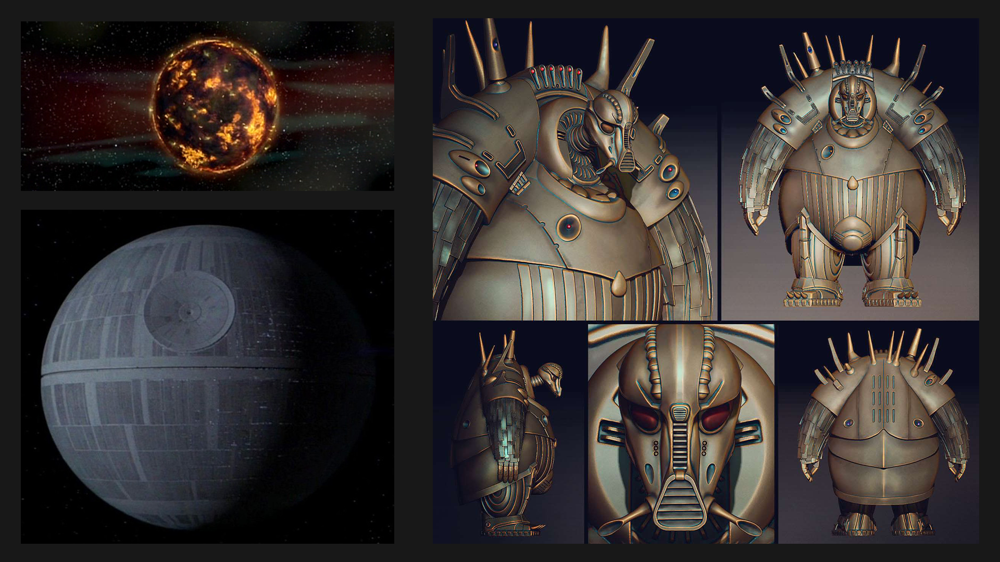

Sin dal primo momento ho saputo di voler realizzare un'animazione di ambientazione fantascientifica. I due film da cui ho tratto ispirazione sono "Star Wars" (episodi: IV e VI) e "Il quinto elemento". In tutti e tre i film vi è un pianeta malvagio che viene distrutto. La mia idea era capovolgere le parti ovvero avere un pianeta buono senza però dichiararlo sin dall'inizio.
Definito lo stile e il mood che volevo per l'animazione sono passato al disegno del personaggio. Essendo in solitario ho sin da subito pensato a un personaggio che potesse essere facile da animare ma che comunque avesse animazioni realistiche e non cartoon.
Così ho optato per un "lumacone spaziale" per eliminare la parte di animazione delle gambe.

Definito il personagggio sono passato alla parte di storyboarding. Anche qui ho cercato di mantenere la trama molto concisa e lineare per non dover poi trovarmi in difficolta con la creazione dei contenuti.